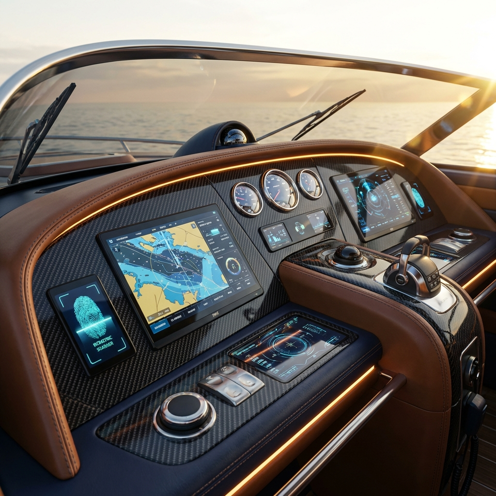
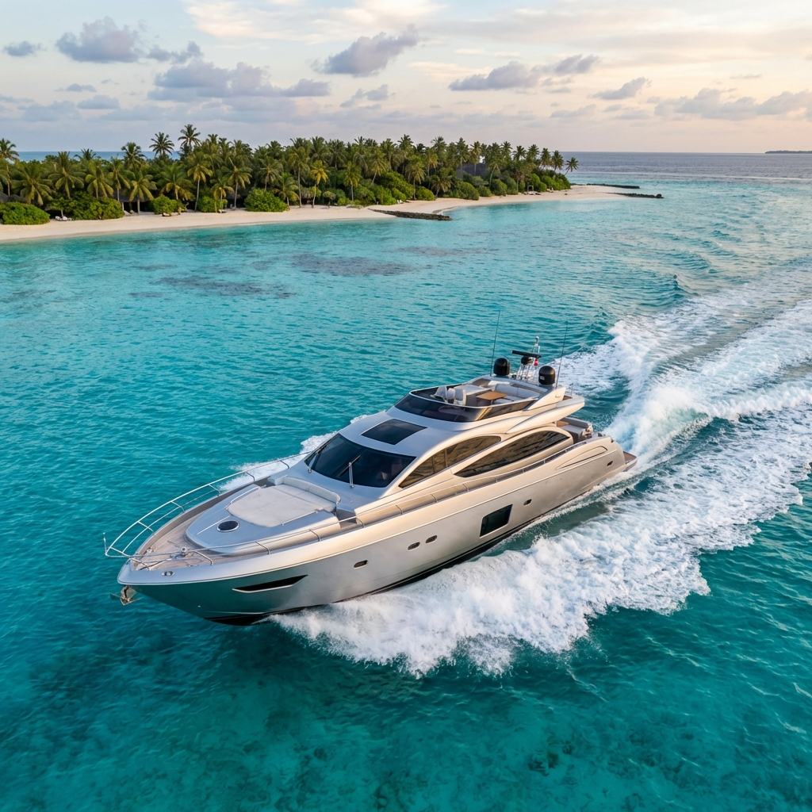
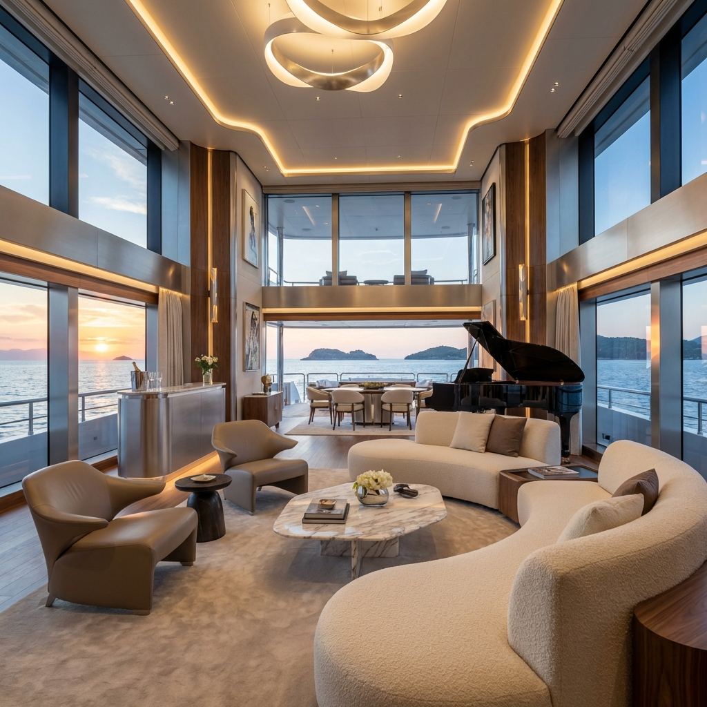

Laboratory V4.0 / Infinite Loop
Seamless
Cycling
Concepto E + INFINITE
Zero-Wall Navigation
01 / 03

Tecnología
CONTROL
INSTINTIVO

Serie X
EL PODER DE
LA LIBERTAD

Artesanía
DETALLES QUE
HABLAN
Tecnología
CONTROL
INSTINTIVO
Serie X
EL PODER DE
LA LIBERTAD
Scroll infinito habilitado